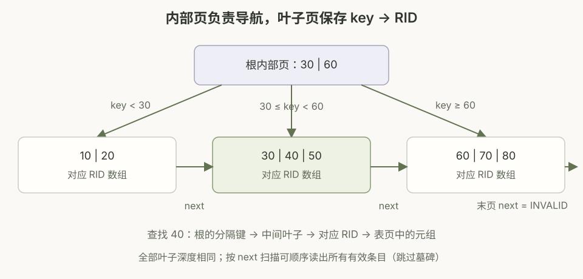
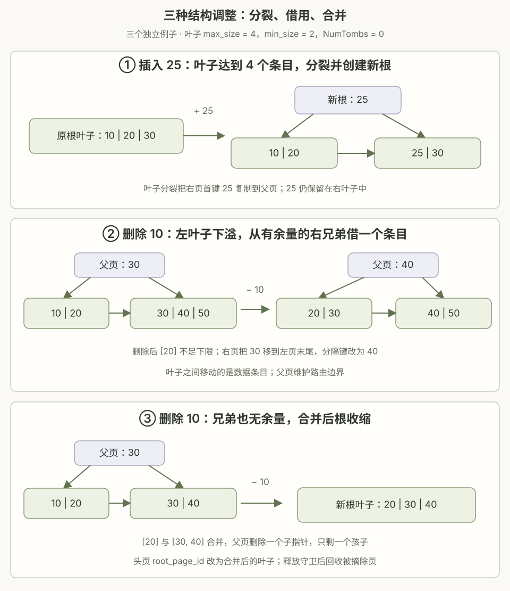

一 / 页的抽象与 B+ 树操作
1.1 一块存储空间，可以采用不同的布局
我的理解是：缓冲池提供一块定长的页数据空间，上层可以把它组织为 B+ 树的内部页、叶子页，也可以组织为数据库表的数据页。它们共享底层的存储和缓冲机制，区别在于如何划分字节、解释字段，以及维护对应的不变式。
当前本地配置中，页数据为 8 KiB。FrameHeader 管理页数据之外的 pin count、dirty 标志和读写锁；ReadPageGuard::As<T>() / WritePageGuard::AsMut<T>() 则把数据区解释为指定页面类型。这里不会凭空复制出另一份页，也不会因为转换了指针类型就自动完成格式转换；新页仍要调用对应的 Init() 初始化字段，已有页必须按正确布局访问。
| 页面类型 | 主要内容 | 代码对应 |
|---|---|---|
| B+ 树公共页头 | 页面类型、物理条目数量和容量，供内部页与叶子页共用。 | BPlusTreePage，由两个索引页面类继承。 |
| 内部页 | 有序分隔键和子 page ID；下标 0 的键为无效占位。 | BPlusTreeInternalPage；Lookup() 返回子页 ID。 |
| 叶子页 | 有序 key 与对应 RID、下一叶子页 ID，以及墓碑数量和下标缓冲区。 | BPlusTreeLeafPage；LowerBound()、Insert()、Remove()。 |
| 表页 | 页头和槽目录从前部增长，元组数据从后部写入，中间为空闲区；槽目录记录偏移、长度和元组元信息。 | TablePage 的 slotted page 布局。 |
索引叶子保存的 RID 是 (page_id, slot_num)，用于定位表页中的元组，并不是把整条表记录直接放入索引叶子。索引页和表页在通常使用时是不同的页；“底层空间可采用不同抽象”不意味着同一份已初始化的数据可以随意切换解释方式。
1.2 B+ 树的性质与查找例图
- 多路搜索。内部节点用多个分隔键划分范围，每个子指针指向一个范围内的子树。一个页能容纳多个分隔键，有助于减少树高和取页次数。
- 高度平衡。所有叶子位于同一深度；插入和删除通过分裂、借用、合并以及根的调整维持结构。
- 数据条目位于叶子。内部页负责导航，叶子存储有序 key → RID；此实现只支持唯一的有效键。
- 叶子有序相连。
next_page_id_串联相邻叶子，范围扫描定位起点后不必为每个条目重新从根搜索。 - 有容量与占用下限。根有特殊规则；非根页的下限依据本地
GetMinSize()计算。启用墓碑时，这些 size 指物理条目数，不等于有效键数。

内部页的 GetSize() 按子指针数量计数：size 为 s 时，有 s 个子 page ID、s − 1 个有效分隔键。Lookup() 在下标 1 开始的分隔键中二分查找第一个大于目标键的位置，再选择其左侧子指针。叶子中的 LowerBound() 则查找第一个不小于目标键的物理下标。
分隔键是路由边界。分裂时通常取右叶子的首键复制到父页，但普通删除后它不一定始终等于右子树当前最小有效键；只要左右范围仍正确，查找就不会走错子树。启用墓碑时尤其需要区分物理键和有效键。
| 比较项 | 叶子页 | 内部页 |
|---|---|---|
| size 含义 | 物理 key / RID 条目数，含墓碑条目。 | 子指针数量，包含下标 0 对应的指针。 |
| 非根下限 | floor(max_size / 2) | ceil(max_size / 2) |
| 本地插入分裂时机 | 新物理条目插入后，size 达到 max_size。 | 原 size 已等于 max_size，又要接收一个新子指针时。 |
| 分裂向上交付 | 复制右叶子的首键；数据条目仍在叶子。 | 提升中间分隔键；右页的首个键槽重置为无效占位。 |
1.3 插入情况总结：从叶子局部修改到向上传播
Insert() 先尝试 TryInsert()。能在单个叶子完成就直接返回；可能改变结构时，再从头页开始获取写路径。下面总结两条路径最终需要处理的情况。
| 情况 | 处理结果 | 相关方法 |
|---|---|---|
| 空树 | 申请新页，初始化为根叶子，插入条目，并在头页记录新根 ID。 | Insert()、LeafPage::Init() |
| 有效键已存在 | 拒绝重复插入，返回 false。 | LeafPage::Insert() |
| 键存在但已被墓碑标记 | 移除对应墓碑、更新 RID，恢复为有效条目；物理 size 不增加。 | LeafPage::Insert() |
| 新键，插入后未触发分裂 | 二分确定位置，移动后续条目，插入 key / RID，并修正墓碑下标。 | LowerBound()、LeafPage::Insert() |
| 叶子达到分裂阈值 | 右半部分转移到新叶子；按原删除顺序分配墓碑；新右页接上原 next，左页 next 改为新右页；把右页首键和页 ID 交给父页。 | SplitTo()、SetNextPageId() |
| 父内部页有空间 | 在分裂的左孩子后，插入分隔键和右孩子 ID，传播结束。 | InsertIntoParent()、InsertAfter() |
| 父内部页已满 | 把待插入项视为合并序列的一部分，直接分裂并提升中间分隔键，继续处理上一层，避免先写入越界。 | SplitAndInsert() |
| 分裂传播越过原根 | 创建只有两个孩子的新内部根，更新头页 root_page_id，树高增加一层。 | InsertIntoParent() |
1.4 删除情况总结：墓碑、借用、合并与根收缩
删除先分清逻辑删除和物理删除。当墓碑容量为 0 时，直接从数组移除条目；容量大于 0 且缓冲区未满时，只追加物理下标作为墓碑，size 不变；缓冲区已满时，先物理移除最早的墓碑条目，再标记本次要删除的条目。如果旧条目位于目标之前，目标下标也随数组左移。
| 情况 | 处理结果 | 相关方法 |
|---|---|---|
| 空树、键不存在或已是墓碑 | 直接返回，无须重复删除。 | TryRemove()、Remove() |
| 只追加墓碑 | 物理 size 不变，不会因此触发物理占用下溢；查找和扫描应跳过该条目。 | WillRemovePhysically()、LeafPage::Remove() |
| 物理移除后仍满足下限 | 在页内完成，调整数组与墓碑下标。 | RemoveAt() |
| 下溢，选中的兄弟有余量 | 优先选左兄弟；没有左兄弟才选右兄弟。兄弟 size 大于其下限时，转移条目并更新父分隔键。 | RebalanceAfterRemove()、MoveLastToFrontOf() / MoveFirstToEndOf() |
| 借用后仍下溢，且选中的兄弟不能再借 | 合并到左侧页；若当前页为最左孩子，就把右兄弟合并到当前页。父页移除一个子指针，必要时继续向上修复。 | MergeFrom()、InternalPage::RemoveAt() |
| 根内部页只剩一个孩子 | 孩子成为新根，树高减一，旧根加入待回收列表。 | RebalanceAfterRemove() |
| 根叶子物理 size 变为 0 | 头页 root_page_id 设为 INVALID_PAGE_ID，回收原根。 | RebalanceAfterRemove() |
本地实现对非最左孩子始终选择左兄弟，并没有在左兄弟不能借用时再尝试右兄弟。借用过程使用循环：转移的条目可能也带墓碑，可能触发接收页清理旧墓碑，不能假定“借一次一定使 size 增加一”。
叶子与内部页的调整不同。叶子借用移动 key / RID，父页更新路由边界；内部页借用还要让父分隔键下移，并以兄弟的边界键替换父分隔键。内部页合并需把父分隔键填入两组子指针之间；叶子合并则直接拼接条目并接好 next，不把父分隔键额外当成一条数据插入。
墓碑也属于结构调整的一部分：分裂要保持两边各自的删除顺序；借用时，转入条目的墓碑被视为比接收页现有墓碑更新；合并时如墓碑容量不足，先处理接收页最早的墓碑。所有下标都要随条目搬移同步修正。

页从树中摘除后，本地代码先记录到 retired_pages，释放相关 Guard，再调用 DeletePage() 回收，避免仍被本次操作固定的页无法删除。启用墓碑时，“全部有效键已删除”也不一定意味着根页物理 size 为 0；判断逻辑内容与判断根 ID 是否无效应分开理解。
二 / 并发：乐观、悲观与螃蟹式加锁
这部分保护的是页内数据与树结构，使用的是 Page Guard 持有的读写闩锁（latch）。乐观路径仍然加锁，只是优先使用读锁向下寻找目标，尽量把独占范围缩小到一个叶子；悲观路径为可能发生的分裂、合并保留必要的祖先写锁。
2.1 螃蟹式加锁：先抓住孩子，再松开父亲
沿树下降时，先持有父页锁、读出子页 ID，再获取子页锁，最后在安全时释放父页锁，像螃蟹交替移动钳子。这段短暂的锁重叠，避免父子关系在“读到指针”和“锁住孩子”之间被结构修改破坏。
持有父页 Guard
→ 根据分隔键选择孩子
→ 获取子页 Guard
→ 判断：本次操作是否可能继续影响祖先？
安全：释放不再需要的祖先 Guard
不安全：保留，继续向下点查找 GetValue() 使用读锁耦合：先在头页读锁下取得根 ID，锁住根页后才释放头页；下降时先获取子读锁，再释放父读锁。这样不必从头到尾锁住整个树。
2.2 乐观路径：尽量只写一个叶子
TryInsert()/TryRemove()从头页出发，沿路径获取读 Guard，下降时保留“当前页 + 父页”的保护关系。- 到达叶子后，保留父页读 Guard，先释放叶子读 Guard，再获取同一个叶子的写 Guard。根本身是叶子时，这里的父级保护由头页读 Guard 提供。
- 取得叶子写锁后才释放父页读锁，并重新读取叶子的当前状态。同一叶子的内容可能已被其他仅修改叶子的线程改变；不能沿用切换锁之前计算的下标或容量结论。
- 若不需要向上调整结构，就在叶子完成；否则释放这些临时 Guard，回到
Insert()/Remove()从头获取悲观写路径。
切换锁期间，父页读锁阻止需要父写锁的结构调整，从而保护这个叶子的树中位置；它不阻止其他线程先对叶子做局部写入。代码没有对 shared_mutex 执行原子“读锁升级”，也没有一边保留叶子读锁一边再申请同一页的写锁。
| 比较项 | 乐观路径 | 悲观路径 |
|---|---|---|
| 入口 | TryInsert() / TryRemove() | Insert() / Remove() 的回退部分。 |
| 主要锁范围 | 下降时读锁；最终叶子写锁。 | 从头页向下按需持写锁，保留不安全祖先。 |
| 适合情况 | 重复键、恢复墓碑键、不会分裂的新键插入，以及不引发结构修复的删除。 | 空树建根、可能分裂、借用、合并、根变化。 |
| 插入返回 | optional<bool>：有值表示已处理，false 表示有效键重复；nullopt 才表示需要回退。 | 重新定位、检查并完成插入或拒绝重复键。 |
| 删除返回 | true 表示已处理（也包括键不存在）；false 表示需要回退。 | 重新检查键，删除并按需要再平衡。 |
2.3 悲观路径：安全的子页让祖先可以提前释放
Context 保存头页写 Guard 和路径上的 write_set_。拿到一个安全子页的写锁后，代码调用 ReleaseGuards() 释放已保存的祖先，再把当前子页 Guard 加入路径。这里“安全”指当前这次操作不会越过该页继续修改它的父页，与“该页已经加锁”是两个判断。
| 操作 / 节点 | 安全条件 | 含义 |
|---|---|---|
| 插入 / 叶子 | size + 1 < max_size | 本地叶子在插入后达到阈值就分裂，因此仅“还有一个槽位”不够安全。 |
| 插入 / 内部页 | size < max_size | 能接收孩子分裂产生的一个新子指针，不必继续分裂。 |
| 删除 / 非根叶子 | 不会物理删除，或 size > min_size。 | 只加墓碑不减 size；物理少一个条目也不会下溢。 |
| 删除 / 非根内部页 | size > min_size | 即使失去一个孩子也仍满足下限。 |
| 删除 / 根叶子 | 不会物理删除，或 size > 1。 | 物理删除后不会变成空根。 |
| 删除 / 根内部页 | size > 2 | 少一个孩子后仍至少有两个孩子，不需收缩根。 |
例如叶子的 max_size 为 4：size 为 2 时插入一个新物理条目安全；size 为 3 时虽然数组还放得下，但插入后会达到 4 并触发分裂，因此需要祖先写路径。有效重复键或墓碑恢复不会新增物理条目，TryInsert() 会单独处理。
TryRemove() 使用非根叶子的 min_size 条件作为保守判断，并未在快路径单独放宽根叶子的条件；因此某些无需最终结构调整的根叶子删除也可能回退。写路径再按上表区分根与非根。
2.4 结构修改时保护什么？
插入分裂通过保留的写 Guard 向上传播；删除再平衡还需在父写锁和目标页写锁保护下，取得选中兄弟的写 Guard，修改两页和父分隔键。根 ID 位于单独的 BPlusTreeHeaderPage，建根、根分裂或根收缩时，需要保留头页写 Guard；如果根已确定安全，就可以较早释放头页。
本地 Context::ReleaseGuards() 先释放头页，再从队首向下释放祖先 Guard。沿路径的取锁与释放顺序需要一致，且避免在同一线程重复获取同一页读锁。Guard 同时维护 pin count，保证被锁住、正在使用的帧不会被缓冲池替换。
页面 latch 保护结构与内存访问，不等同于事务的行锁、隔离级别或 MVCC。单次点查找和更新具备加锁路径，也不能据此推断整个范围扫描具有一致快照；当前迭代器的限制见下一节。
三 / 迭代器的实现与 STL 对照
B+ 树迭代器把“页内数组 + 页间 next 链”包装成一段可向前遍历的有序序列。本地保存的主要位置状态为 (bpm_, page_id_, index_)，另有一份用于解引用的键和值缓存。
3.1 哪些方法属于树，哪些属于迭代器？
| 所属对象 | 接口 | 职责与边界 |
|---|---|---|
| BPlusTree | Begin() | 沿最左子指针下降，找到最左叶子，再跳过墓碑和无有效条目的页；空序列返回 End。 |
| BPlusTree | Begin(key) | 定位目标叶子并取 LowerBound，从第一个不小于 key 的有效条目开始；必要时跨到下一叶子。 |
| BPlusTree | End() | 返回 page_id = INVALID_PAGE_ID, index = 0 的尾后哨兵，不能解引用。 |
| IndexIterator | operator== / operator!= | 普通位置比较缓冲池包装对象、页 ID 与下标；两个无效页 ID 的结束状态在本实现中直接视为相等。 |
| IndexIterator | operator++() | 前置递增：先增加下标，再跳过墓碑、跨页，返回自身引用；不能递增 End。 |
| IndexIterator | operator*() | 读取当前 key / RID 到自身缓存，返回引用对；不能解引用 End。 |
| IndexIterator | IsEnd() | 判断是否已到尾后位置；不是判断“当前是否为最后一条记录”。 |
也就是说，容器负责提供起点和终点，迭代器负责判断位置、取值和推进。使用当前代码可以写出普通的迭代循环：
for (auto it = tree.Begin(); it != tree.End(); ++it) {
auto entry = *it; // pair 内部是引用，不是独立数据副本
auto key = entry.first; // 明确复制键
auto rid = entry.second; // 明确复制 RID
// 使用 key 和 rid
}3.2 ++ 如何跨页，又如何处理墓碑？
AdvanceToValid() 是构造函数和前置 ++ 共用的辅助逻辑。它每次获取当前叶子的读 Guard，在当前物理数组中跳过墓碑；若到达页末，就取 next_page_id、把 index 重置为 0，释放本轮 Guard 后再访问下一页。即使遇到一整页都是墓碑，也会继续推进。
当前页：[10, ×20, 30] → 下一页：[×40, ×50] → 下一页：[60]
↑ it
++it → 30 跳过 20
再次 ++ → 60 越过页末，跳过整页墓碑
再次 ++ → End next = INVALID_PAGE_IDBegin(key) 的含义接近有序容器的 lower_bound，而不是“必须找到恰好等于 key 的条目”。例如有效键为 10、30、60，Begin(20) 指向 30；如果从该位置往后都没有有效条目，就返回结束状态。
3.3 解引用为什么使用缓存？
operator*() 内部的读 Guard 是局部对象，函数返回后便解锁并取消固定。如果直接返回帧内数组元素的引用，帧后续被复用时，引用可能指向别的页面。因此本地先把 key 和 value 复制到 cached_key_、cached_value_，再返回 std::pair<const KeyType &, const ValueType &>。
返回的引用依赖迭代器对象自身的生命周期。++ 只移动位置，不会立即刷新缓存；下一次对同一个迭代器解引用会覆盖缓存，先前保存的引用也会看到新缓存值。若需要长期保存条目，应像上例一样复制键和值；仅写 auto entry = *it 仍然得到一对引用，不能把它当作深拷贝。
3.4 与 vector、unordered_map 的列表对照
下面按当前本地实现比较。vector 一栏讨论普通 vector<T>，不包括 vector<bool> 的特化。STL 行为参考 C++ 标准草案中的 vector、vector 的修改与失效规则、无序关联容器要求及迭代器通用要求。
| 比较项 | 本地 BusTub B+ 树 | std::vector<T> | std::unordered_map<K, V> |
|---|---|---|---|
| 数据组织 / 遍历顺序 | 有序叶子数组 + next 链，按 key 顺序，跳过墓碑。 | 连续存储，按序列位置；不会自动按值排序。 | 按哈希桶组织，不保证按键排序或插入顺序。 |
| 起点 / 终点 | tree.Begin() / tree.End() | v.begin() / v.end() | m.begin() / m.end() |
| 位置比较 | == / !=；普通位置比较 bpm、page ID、index。 | 同一序列可做 == / != 和位置次序比较。 | == / !=；没有按键大小的位置比较。 |
| 向前推进 | 只有前置 ++；可能跳过多个墓碑和叶子页。 | 前置与后置 ++，也能 --。 | 前置与后置 ++；不提供 --。 |
| 随机跳转 / 距离 | 未实现 +n、-n、下标或迭代器相减。 | 支持 +n、-n、差值和下标访问。 | 不支持随机跳转或迭代器相减。 |
| 解引用 | 指向迭代器缓存的两个 const 引用，不可通过它修改页内值。 | iterator 返回 T&，const_iterator 返回 const T&。 | iterator 返回 pair<const K, V>&：键只读，映射值可修改。 |
| 按键定位扫描起点 | Begin(key) 具有 lower_bound 语义。 | 容器无按键接口；有序时可用算法 lower_bound。 | find(key) 仅找等值键，无有序 lower_bound。 |
| 一次推进的成本 | 取页、锁及墓碑检查；跨页时可能涉及磁盘 I/O，不能保证每次为常数成本。 | 常数时间，不涉及缓冲池。 | 向前迭代；容器迭代器要求规定递增为摊销常数时间，不涉及缓冲池。 |
| 修改后的稳定性 | 保存物理页号和下标；条目移动、分裂或合并后，不承诺位置稳定。 | 重分配使所有迭代器失效；无重分配的插入使插入位置及之后失效。 | rehash 使迭代器失效；erase 使被删条目的迭代器失效。 |
扫描接口与完整 STL 迭代器要求需要区分。当前 IndexIterator 没有后置 ++、完整的迭代器类型别名等接口；BPlusTree 提供的是大写 Begin / End，没有小写 begin / end 或相应适配。它能用于上面的显式循环，不能因此直接宣称满足标准 ForwardIterator，也不能直接把 for (auto entry : tree) 当作已实现功能。
3.5 单页读锁不等于整个扫描的一致快照
当前迭代器仅在检查位置或解引用时短暂持有单页读 Guard，迭代步骤之间不保留页面锁。另一个线程若移动条目、分裂、合并或回收页面，存储的 page ID / index 就可能不再代表原来的位置。缓存解决的是返回引用对局部 Guard 的生命周期依赖，并不解决遍历与并发结构修改之间的一致性问题。
因此，这里记录的是稳定树结构下的有序扫描实现。要支持更强的并发范围扫描，还需要额外设计位置校验、重试、页面生存期保护或版本可见性规则；不能只凭使用了读 Guard 就保证整个扫描结果一致。
代码阅读索引
本文依据本地 cmu-15-445/bustub 的当前工作区实现整理。以下保留函数和文件索引，便于回到代码核对。
src/include/storage/page/b_plus_tree_page.h、src/storage/page/b_plus_tree_page.cpp：公共页头、size 和 min size。src/include/storage/page/b_plus_tree_leaf_page.h、src/storage/page/b_plus_tree_leaf_page.cpp：叶子布局、墓碑、分裂、条目转移与合并。src/include/storage/page/b_plus_tree_internal_page.h、src/storage/page/b_plus_tree_internal_page.cpp：分隔键路由、内部页分裂与再平衡。src/include/storage/page/table_page.h、src/storage/page/table_page.cpp：表页的槽目录和元组布局。src/include/storage/index/b_plus_tree.h、src/storage/index/b_plus_tree.cpp：Context、安全判定、乐观 / 悲观路径及 Begin / End。src/include/storage/index/index_iterator.h、src/storage/index/index_iterator.cpp：位置比较、前置 ++、墓碑跳过和缓存解引用。
相关测试阅读入口：test/storage/b_plus_tree_insert_regression_test.cpp、test/storage/b_plus_tree_remove_regression_test.cpp、test/storage/index_iterator_test.cpp。这些文件覆盖分裂、墓碑恢复、混合操作、有序扫描、跨页跳过与缓存引用等场景。
课程背景可参阅 CMU 15-445 Fall 2025 Project 2 说明，具体命名和边界行为以本地代码为准。